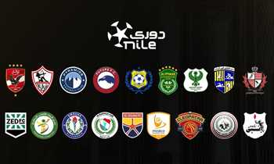

منافسة شرسة تشهدها قمة بطولة دوري نايل بالموسم الجاري، فعلى الرغم من تربع الزمالك على قمة الترتيب خلال المرحلة النهائية، إلا أن الفرصة ما تزال قائمة أمام الأهلي وبيراميدز، اللذان يترقبان تعثر الفريق الأبيض للانقضاض على الصدارة خلال الجولات الأخيرة من عمر البطولة.
نتائج المواجهات المباشرة بين ثلاثي القمة
ـ النادي الأهلي نجح في الدور الأول من الدوري في الفوز على الزمالك بهدفين مقابل هدف، بينما خسر أمام بيراميدز بهدفين نظيفين.
ـ حقق فريق الزمالك فوزاً ثميناً في الدور الأول على بيراميدز بهدف نظيف قبل أن يكرر نفس النتيجو في الدور الثاني، لكنه خسر أيضاً من الأهلي بهدفين مقابل هدف.
ـ أما فريق بيراميدز فنجح في الفوز على الأهلي بثنائية نظيفة بالدور الأول، لكنه خسر من الزمالك بهدف نظيف فيالدور الأول وكذلك الدور الثاني.
س: ما هو ترتيب مجموعة التتويج قبل انطلاق الجولة الرابعة؟
ج:
يتربع نادي الزمالك على قمة ترتيب الدوري بعد الفوز على بيراميدز في الجولة الثالثة من المرحلة النهائية للبطولة بهدف نظيف، وذلك برصيد 49 نقطة، بفارق 5 نقاط كاملة عن الأهلي وبيراميدز أقرب ملاحقيه، ويحل بيراميدز في المركز الثاني برصيد 44 نقطة، ويليه الأهلي ثالثاً بنفس الرصيد، بينما يأتي سيراميكا في المركز الرابع برصي 43 نقطة، ثم إنبي برصيد 35 نقطة في المركز الخامس، والمصري سادساً برصيد 34 نقطة، وأخيراً سموحة في المركز السابع برصيد 31 نقطة.
س: كيف يتم حسم اللقب حال التساوي في النقاط؟
ج:
وفقاً للائحة النسخة الجارية من بطولة الدوري، يتم الرجوع ـ حال التساوي في النقاط بين الفرق المتنافسة ـ إلى المواجهات المباشرة أولاً لحسم ترتيب المراكز.
س: ما المباريات المتبقية للزمالك في الدوري؟
ج:
يتبقى لنادي الزمالك 4 مباريات في الدوري هي، إنبي، الأهلي، سموحة، سيراميكا، على الترتيب، قبل انتهاء البطولة؟
س: ما المباريات المتبقية للأهلي في الدوري؟
ج:
يتبقى للنادي الأهلي 4 مباريات وهي، بيراميدز، الزمالك، إنبي والمصري، على الترتيب قبل انتهاء منافسات الدوري.
س: ما المباريات المتبقية لبيراميدز في الدوري؟
ج:
يتبقى لبيراميدز 4 مباريات قبل انتهاء البطولة وهي، الأهلي، إنبي، سيراميكا ثم سموحة على الترتي، وذلك قبل انتهاء مباريات البطولة.